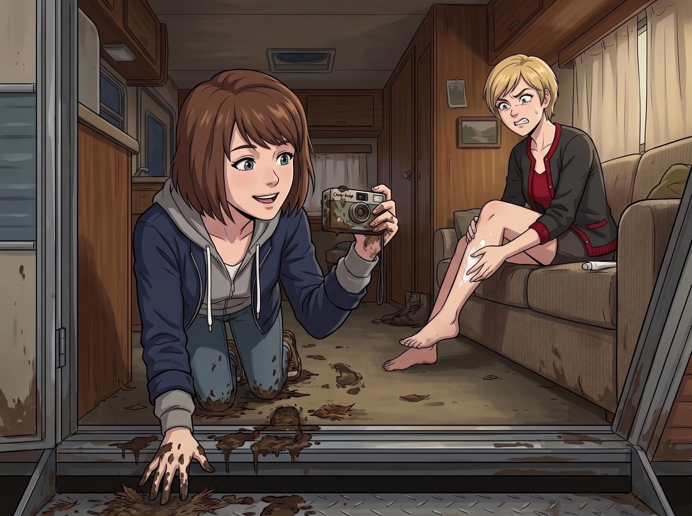

泥地裝備進化論

奧林匹亞半島的泥濘，對帆布鞋來說是一場毫無懸念的單方面屠殺。
當 Max 舉著那台剛沒收來的 Camp Snap 數位相機，心滿意足地從營地外的冷杉林裡鑽回二號車廂時，她每走一步，金屬地板上就會留下一個沉重且發出吧唧聲的黑色泥印。她那雙曾經充滿文青氣息的經典款匡威帆布鞋，此刻已經完全看不出原本的顏色，鞋面上糊滿了爛樹葉、松針和厚厚的黑泥，活像兩坨剛從沼澤裡撈出來的史萊姆。
一、單方面的屠殺
正在沙發上給腿部塗抹身體乳的 Victoria，聽到那令人作嘔的吧唧聲，猛地轉過頭。
「天哪，Maxine！妳是剛去給哪個中世紀的農奴犁地了嗎？！」Victoria 嫌惡地捏住鼻子，將雙腿高高抬起，彷彿那泥巴會順著空氣傳染過來，「那雙鞋散發出來的味道，簡直像是踩滿了野狗排泄物的民工鞋！我限妳在三秒鐘內把它們脫下來扔進焚化爐，否則我就用殺蟲劑給妳全身消毒！」
Max 尷尬地站在門口，低頭看了看自己慘不忍睹的雙腳。冰冷的泥水早就浸透了單薄的帆布，她的腳趾現在凍得像十根冰棍。
「帆布鞋在溫帶雨林裡？妳這是在對大自然進行某種行為藝術的挑釁嗎？」Chloe 從車底鑽了出來，手裡拿著一把沾滿機油的扳手。她看著 Max 那雙泥鞋，毫不留情地發出了爆笑。
接著，Chloe 走到她那個宛如軍火庫般的儲物箱前，翻找了一陣，然後砰地一聲，將一雙黑色的、沉甸甸的金屬包頭重型工裝馬丁靴砸在了 Max 面前的木板上。
「聽著，文青攝影師，在這個見鬼的泥潭裡，妳需要的是裝甲，而不是包漢堡的薄紙。」Chloe 拍了拍那雙散發著厚重牛皮氣味和工業機油味的靴子，狂野地挑了挑眉，「十四孔、固特異縫線、防滑大底加鋼頭。試試？」
二、企鵝步的震撼
Max 嚥了一口唾沫。迫於腳下冰冷的泥水和 Victoria 隨時準備噴射的殺蟲劑，她只能脫下那雙可憐的匡威，將腳伸進了那雙硬得像鐵桶一樣的馬丁靴裡。
繫上鞋帶的那一刻，Max 感覺自己的雙腳被直接焊死在了地板上。
「走兩步看看？」Chloe 抱著手臂，一臉期待。
Max 試圖抬起右腳。她平時走路習慣了帆布鞋的輕盈，但那雙重達五磅的鋼頭靴根本不聽使喚。她踉蹌了一下，膝蓋僵硬地往前一邁，靴子沉重的橡膠大底咚地一聲砸在地板上，震得整個車廂都跟著晃了一下。
她就像一個關節生鏽的發條玩具，在車廂裡咚、咚、咚地走了兩圈。那僵硬、滑稽、連腳踝都彎不下來的企鵝步，讓 Chloe 笑得直接跌坐在沙發上，連原本在生氣的 Victoria 都忍不住捂著嘴發出了幸災樂禍的悶笑。
「我覺得……我現在可以一腳踢死一頭熊。」Max 滿頭大汗地扶著牆。
「完美！這就是廢土生存的奧義！」Chloe 豎起大拇指。
三、摔進泥坑的代價
第二天，Max 穿著這雙廢土裝甲再次踏入了泥濘的叢林。
在剛開始的十分鐘裡，她確實嚐到了甜頭。沉重的防水牛皮將所有的泥巴和冰冷完美地隔絕在外，防滑大底讓她能像個推土機一樣在爛泥坑裡如履平地。
但這份快樂，在她試圖進行攝影創作時，瞬間變成了地獄級的折磨。
Max 看到一朵生長在腐木根部、形態奇特的蘑菇。她習慣性地想要像以前那樣，靈活地蹲下身，腳尖踮起，壓低重心去抓拍一個微距的低視角。
然而，新馬丁靴的皮革硬得宛如鋼板，她的腳踝根本無法彎曲。當她強行試圖折疊腳背蹲下去的那一瞬間，靴子的鞋幫死死卡住了她的小腿脛骨。物理學的槓桿原理無情地發揮了作用——Max 的重心瞬間失控，整個人就像一塊僵硬的木板，筆直地、毫無挽回餘地向後倒去。
「啪嘰。」一聲悶響，Max 呈大字型，直挺挺地仰面摔進了一個巨大的爛泥坑裡。手裡的相機雖然沒壞，但她的後腦勺和背部已經完全與奧林匹亞半島的泥土融為一體了。
當渾身是泥、生無可戀的 Max，像一具殭屍一樣拖著那雙沉重的靴子走回車廂時，等待她的是 Chloe 毫不掩飾的狂笑，以及 Victoria 徹底崩潰的尖叫。
「把那個泥人給我扔出去！！！」Victoria 舉著殺蟲劑站在沙發上。
四、被打斷的採購申請
正在工作站前敲擊鍵盤的 Lily，看著滿身泥漿、雙眼無神的 Max，平靜地推了推圓框眼鏡。
「Max 學姐，您目前的物理狀態，已經嚴重違反了營地的生物安全與衛生標準。」Lily 剛開始準備動用她一貫的行政流程，正要打開申請表單，準備循例走一遍工傷報備、申請升級裝備的老路子——
一隻塗著裸色法式美甲的纖細手掌，輕輕按在了 Lily 筆記本電腦的螢幕邊緣，將其緩緩合上。
「取消那個見鬼的採購申請，Lily。」
Victoria 穿著一雙纖塵不染的喀什米爾羊絨拖鞋，優雅地走到還在滴著泥水的 Max 面前。她用一種看著某種嚴重品味災難的眼神，掃過 Max 那雙凍得發紅的腳丫，然後極度嫌棄地瞥了一眼被扔在地上的那雙 Chloe 的重型馬丁靴。
五、老錢的降維打擊
「Victoria 學姐，」Lily 平靜地抬起頭，「軍方裝備在防水性和耐用度上，完全可以滿足日常勞保需求。」
「軍方採購？別逗了，實習生。妳的行政黑魔法確實厲害，但妳對上流社會的物質標準一無所知。」Victoria 冷笑了一聲，雙手抱在胸前，開始了她作為名媛的降維打擊：「妳知道所謂的軍方採購是什麼運作邏輯嗎？那是最低價得標。政府合約永遠會落入那些能把成本壓縮到極致、只滿足最低合規標準的承包商手裡。妳以為那些打著戰術標籤的鞋子是好東西？那不過是廉價的工業塑料、粗糙的尼龍走線，加上能把腳捂出真菌感染的劣質黏合劑！」
Victoria 轉過頭，看著還在發抖的 Max，語氣中帶著一種不容拒絕的傲慢：「我絕對不會允許我的室友——哪怕是個品味糟糕的文青——穿著那種連大兵都嫌棄的地板價合規爛貨在泥地裡走來走去。Maxine，跟我來。今天我讓妳見識一下，什麼叫真正的老錢裝備。」
Victoria 轉身走向她那個一直放在床鋪底下的、巨大的訂製復古旅行箱。隨著黃銅鎖扣發出幾聲清脆的咔噠聲，旅行箱像一個小型的私人衣帽間一樣展開了。
Chloe 叼著棒棒糖湊了過來，酸溜溜地說：「怎麼？大小姐打算讓 Max 穿著鑲鑽的高跟鞋去踩爛泥嗎？」
「閉嘴，街頭混混。貧窮限制了妳對實用主義的想像力。」Victoria 從旅行箱最底層的防潮天鵝絨隔層裡，捧出了一個低調的墨綠色鞋盒。
六、義大利的溫柔
她打開鞋盒，裡面靜靜地躺著一雙深棕色的中筒靴。沒有任何誇張的Logo，沒有粗獷的金屬鋼頭，皮革表面散發著一種猶如絲綢般溫潤暗啞的光澤。
「頂級工坊訂製款徒步靴。」Victoria 像展示藝術品一樣將靴子遞給 Max，語氣中充滿了金錢的威壓：「外層是經過特殊疏水塗層處理的頂級小牛皮，比妳那雙破帆布鞋還要輕。內襯是百分之百的蒙古小山羊絨，能讓妳的腳趾在零下十度的雪地裡依然保持恆溫。至於鞋底……」
Victoria 瞥了 Chloe 一眼，滿臉嘲諷：「不是那種能把腳踝卡斷的死硬橡膠。這是柔性記憶大底，裡面隱藏著碳纖維支撐板。它不需要任何磨合期。」
Max 嚥了一口唾沫。她小心翼翼地接過那雙靴子，觸感軟糯得不可思議，重量甚至比她原來的匡威重不了多少。
當她將凍僵的雙腳滑進靴子裡的那一瞬間……Max 舒服得差點叫出聲來。
沒有冰冷，沒有生硬的壓迫感。那層頂級的小山羊絨就像一團溫暖的雲朵，瞬間包裹住了她剛才被馬丁靴磨得生疼的腳踝。她站起身，試著走了一步。靴子完美地貼合著她的足弓，每走一步，碳纖維大底都會給出一個極其輕盈且精準的反饋。這根本不是在穿鞋，這是在享受某種足部SPA。
「這……這太舒服了……」Max 震驚地在車廂裡走了兩圈，腳步輕盈得像一隻貓，「Victoria，這雙鞋多少錢？」
「三千五百美金。而且妳得在工坊的VIP名單上排隊六個月。」Victoria 輕描淡寫地說道，彷彿在說一杯咖啡的價格。
「三千五百刀？！」Chloe 差點把嘴裡的棒棒糖咬碎，「就為了去泥巴裡踩兩腳？！妳們這些資本家瘋了嗎？這夠我買一台二手的越野摩托車了！」
「所以這就是為什麼妳只能在泥裡摔跤，而我們能在泥裡優雅地散步，Chloe。」Victoria 走上前，幫 Max 整理了一下鞋帶，拍了拍手：「真正的老錢，從來不會為了所謂的硬核去折磨自己的身體。我們花錢，買的是對抗惡劣環境時的絕對舒適權。品質好的東西，是保護妳的，不是用來給妳上刑的。」
Max 穿著那雙三千五百美金的羊絨徒步靴，看著地上那雙把自己摔進泥坑的鋼頭馬丁靴，突然覺得 Victoria 剛才那番散發著銅臭味的言論，竟然無比地有說服力。
七、順手的最後一擊
一直安靜地坐在工作站前的 Lily，看著這一幕，並沒有因為自己的採購計畫被打斷而生氣。相反，她那雙圓框眼鏡後的眼睛裡，閃爍出了另一種精算的光芒。
「非常精準的資產降維打擊，Victoria 學姐。我收回我對軍方勞保裝備的推薦。」Lily 重新打開了筆記本電腦，劈裡啪啦地敲擊著鍵盤，嘴角勾起一抹極度純潔的微笑：「既然您自願為營地的核心視覺紀錄員提供了價值三千五百美元的私人裝備，這將被視為對多元藝術基金會的實物捐贈。」
Lily 抬起頭，看著 Victoria：「我已經將這雙鞋的折舊和維護成本，作為極端環境藝術創作的高階物理保障支出，全額計入了您家族信託本季度的免稅抵扣額度中。恭喜您，學姐，這雙鞋現在不僅能踩泥巴，還能合法地為您抵消大約一千兩百美元的加州財產稅。」
Victoria 愣了一下，隨後高傲地撩了一下金髮，對著 Chloe 露出了一個勝利的冷笑：
「聽到了嗎，窮鬼？我這叫投資。而妳那雙破鐵鞋，連退稅的資格都沒有。」
Chloe 氣結，煩躁地抓起自己的馬丁靴，嘟囔著一群萬惡的資本吸血鬼，灰溜溜地鑽回了車底繼續修車。
Max 低頭看著自己腳上那雙柔軟、溫暖、且承載著複雜稅務操作的頂級老錢靴。她再次舉起胸前的相機，對著 Victoria 那驕傲的背影，以及正在電腦前一絲不苟地做帳的 Lily，按下了沒有螢幕的快門。